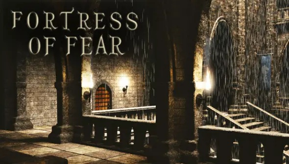
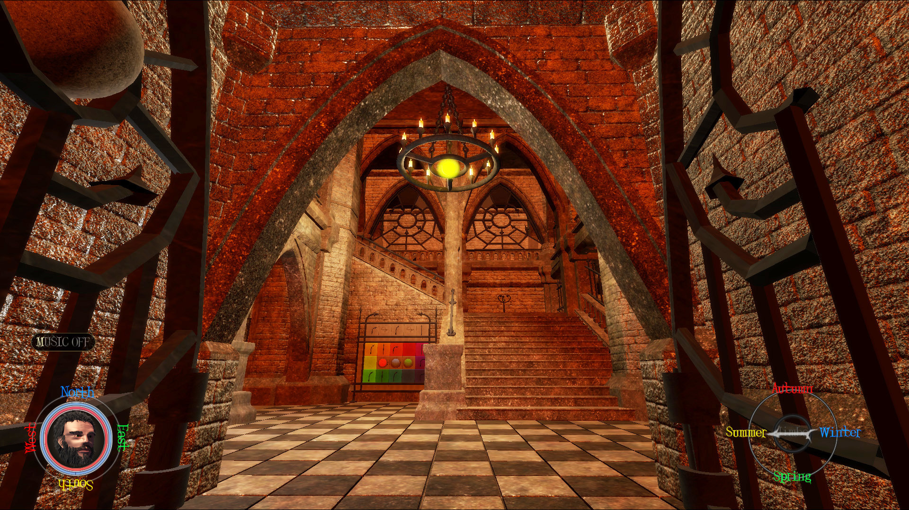

Lord Temin's Fortress Review
A puzzle game that feels like it came from another era.

Lord Temin's Fortress is a puzzle game in which the protagonist returns to his own castle to free what is presumably his wife's soul from captivity, braving the traps and puzzles laid out by the demon inside. That's quite a plot, isn't it? The gameplay has you travel through ginormous castle halls, solving puzzles using strange spheres and lasers, while avoiding enemies like huge, floating, disembodied skulls, all while haunting music plays. The graphics are rough, but it leads to the old-school charm that you don't see in games these days. All of these details culminate in a design that feels raw, gritty, and nerve-wracking. While I usually prefer puzzle games with a specific set of mechanics, like The Talos Principle, it was a breath of fresh air how often the mechanics change in this game.

Inconsistently named both Lord Temin's Fortress and Fortress of Fear, and totaling only 3 Steam reviews, I'm not sure how I came across this game myself. But it's incredibly charming with its passionate design, and it will stick with me for a long time as a testament to what a solo developer can make.